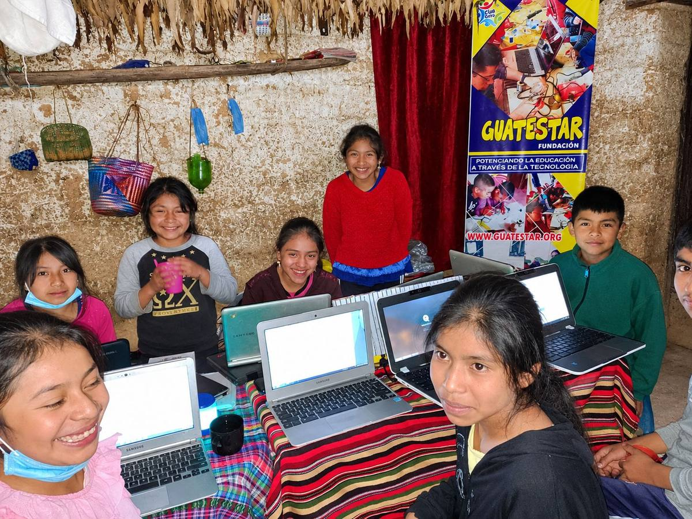

Why our model works
Six principles that guide every Club Extra session, every scholarship and every family visit.
Quality over quantity, staying in school over enrollment
In Guatemala, nearly 90 of every 100 children who start elementary school leave the system before college. Our approach is designed for that stretch: helping every child move on to the next level.
Long-term accompaniment
Temporary aid doesn’t work. We walk with each child for years, from Club Extra to college, because the challenge isn’t getting into school but staying there.
In their own community
We bring learning to the village, with computers, internet antennas and the Chispa platform, so no one has to leave to learn well.
With the family
Behind every child who stays in school is a mother or father who decided to believe in them. We build a relationship with each family that lasts for years.
Learning by doing
The CREA+ method (Connect, Resolve, Experiment, Argue and Improve) has children solve real problems instead of memorizing.
Values before numbers
The kind of person we help shape matters more than how many children go through a program. We build love, integrity, innovation, collaboration and hope.
Leadership that multiplies
Those who receive an opportunity learn to create it for others: participants become volunteers, and volunteers become facilitators.
What we don’t do, and what we do
Temporary aid
- One-off handouts that end with the photo.
- Counting how many children attended an event.
- A ready-made future, decided by others.
GuateStar accompaniment
- Years-long relationships with each child and family.
- Measuring how many move on to the next level.
- Talents developed so each child decides how far to go.
What the 2026 data shows
- 7 of 7 scholarship students who finished 6th grade moved on to middle school.
- 10 of 10 scholarship students who finished 9th grade moved on to high school, the stretch where most young people drop out in Guatemala.
- 6 of 7 high school graduates went on to college, in a department with low college enrollment.
- 83% of children enrolled in Club Extra attend every week.

What the approach looks like in practice
Six stages, from Club Extra to college, each opening the door to the next.

Walk with a child all the way through school
They already have the curiosity and the drive. Your support helps them keep going, alongside their family and community.